This lab is the third session of the AIOps Enablement Series for ANZ Bank. This track focuses on the Automate Operations, which relates to how you could integate Dynatrace with orchestration tools to Automate Operations.
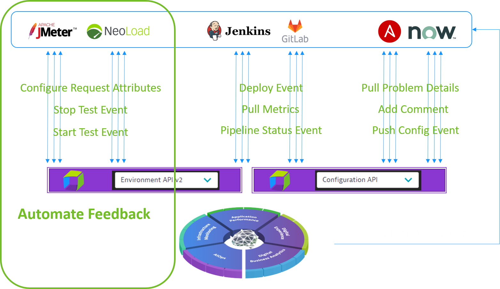
What You'll Learn
- Integrate Ansible with Dynatrace
- Stimulate an issue in Dynatrace and let DAVIS AI pick up the issue automatically
- Auto-remediate using ansible-remediation scripts
Other useful commands:
- To view all docker containers:
docker ps -a - To view the downloaded images on localhost:
docker images - To remove a particular image:
docker rmi - To stop a docker:
docker stop - To remove a docker:
docker rm - To run a docker in interactive bash:
docker run -it/bin/bash - To delete all the unused images:
docker system prune -a -f - To pull a particular image:
docker pull - Jenkins pipeline: Command:
https://github.com/nikhilgoenkatech/JenkinsBankApp
We will run some commands that would need root permissions, so make sure you are root by running sudo su
We will be running application on dockers to stimulate and remediate the issues; so ansible-tower docker should be able communicate with the other dockers using docker-network.
In order it works as expected, start with checking if you already have a network present by issuing docker network ls If there is no network, create a network by issuing the command: docker network create mynetwork
Now, run ansible-tower docker as docker create -v /var/lib/postgresql/9.6/main --name tower-data nikhilgoenka/ansibletower /bin/true
The above would create a postgres data volume which can be used to retain and retrieve the ansible-tower data. Once, the volume is created, run the ansible-tower docker as docker run -d --network mynetwork --name ansible-tower --volumes-from tower-data -p 8090:443 nikhilgoenka/ansibletower
From within your terminal, let us install python-docker on the hosts so that ansible-tower can perform operations on the host. To install python-docker, run apt-get install python-pip followed by pip install docker. This would install docker library that ansible would use in order to remediate the issue.
Further, we would need d1pacmworkshop user to access/change/modify docker, so let us give it required permissions on the docker. To do so, runsudo usermod -aG docker d1pacmworkshop This would add d1pacmworkshop user to docker group and it will get the required permissions to access/change the docker.
Lastly, navigate to /home/ubuntu/ACMD1Workshop/additional_resources/app_docker/scripts folder and runwget https://raw.githubusercontent.com/nikhilgoenkatech/AIOPSAnsibleBankPlaybooks/main/synthetic-monitor.sh to download the synthetic scripts that would be run in order to validate the auto-remediation. Further, give the script execute permission using chmod +x synthetic-monitor.sh
Now, let us run the docker for SampleBankApp on which we will run playbooks and remediate issues as below:docker rm SampleBankAppdocker run --network mynetwork -d --name SampleBankApp -p 3000:3000 nikhilgoenka/sample-bank-app:1.0
This would start the sample-bank-app on port 3000.
Connect to your ansible-tower instance by opening "https://my-IP:8090/" (replace my-IP with your instance IP) in your browser and click on "Advanced" followed by proceed
Also, access the sample-bank app from your browser at "http://MY-IP:3000/login" to populate the service "node-bank" under "Transactions & Services"
Login into your ansible docker using credentials admin and password dynatrace
Import the license by clicking on "Browse" and uploading the license that was earlier shared with you in email.
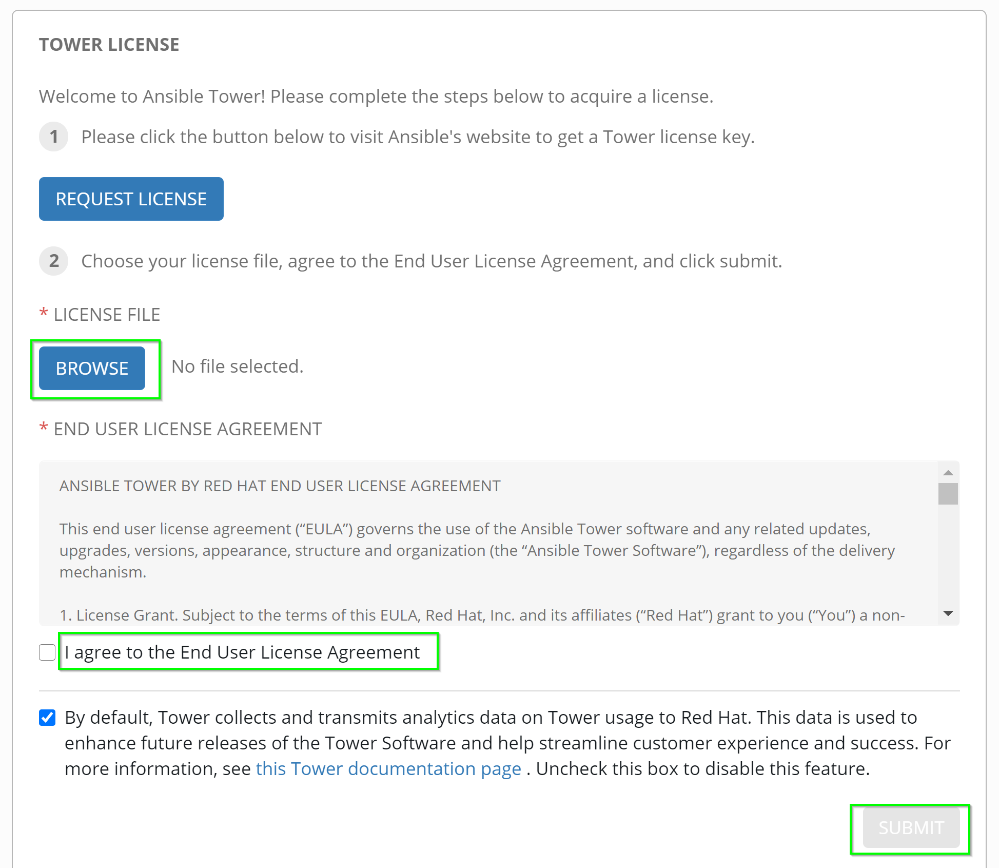
Ansible Architecture consists of following important pillars which would need to be configured in order to leverage its functionality:
- Inventory: Inventory is a collection of your hosts. So, all the hosts under one-app can be part of your inventory.
- Projects: Project is a collection of playbooks that would run on different hosts/inventories.
- Credentials : Credentials are the credentials that ansible playbook would use to SSH on your hosts/inventories.
- Template : The playbook can have it's own set of rules like vars, etc. and are referred to as Job-templates. So, let us configure each of these important parameters.
Setting up inventory
Now, create the inventory by clicking on Inventory in the left-side as seen below:
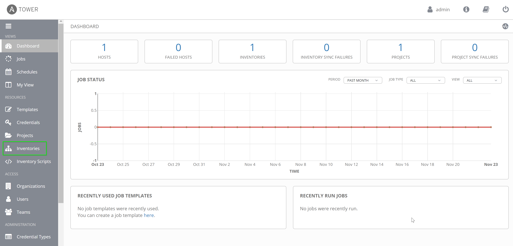
That would open the page displaying the existing inventories. Delete the existing inventory for a clearer view before adding one as seen below:
Delete existing inventory and select "Inventory"
Inventory Details
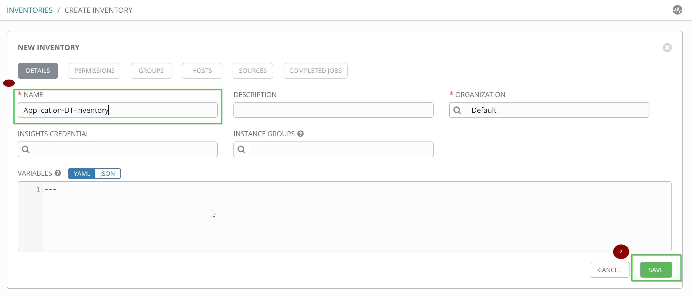
Once you add the inventory, you will get an option to add hosts for that inventory. Add the host by navigating to the "Hosts" tab.
Add host with host-name=my-IP and description as "Application-Docker-Server" (replace my-IP with the actual IP of your instance).
Add hosts
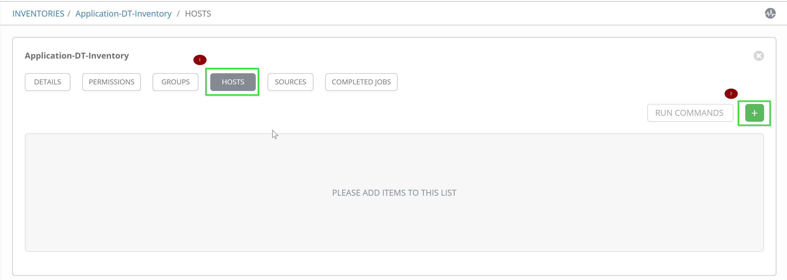
New host details
Setting up Project
So, let us add a project. To add/edit projects, click on "Projects". Start by deleting the existing "Demo Project" for a cleaner view, followed by clicking on "+" and "Project" to add your projects.
Project-name: Application-playbooks
SCM Type: Git
SCM URL: https://github.com/nikhilgoenkatech/AIOPSAnsibleBankPlaybooks
Create Project
Setting up Credentials
With the hosts and playbooks added, now add the credentials that ansible will use in order to connect to the configured hosts and run the playbook from projects.
Navigate to Credentials as shown below.
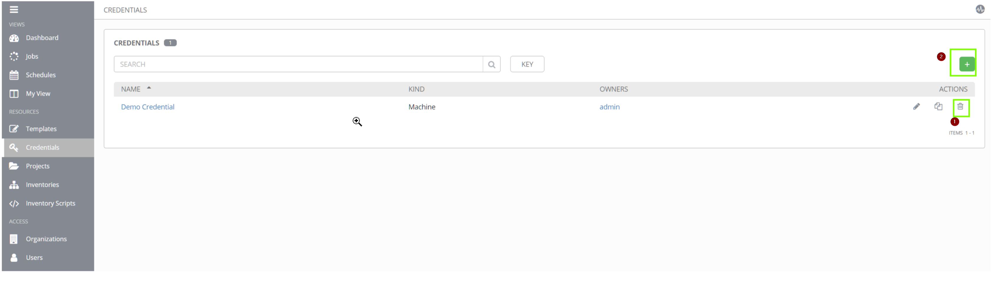
Delete the existing "Demo Credentials" and add credentials for your AWS host.
Name: Application-servers
Credential Type: Machine
Username: d1pacmworkshop
Password: dynatrace
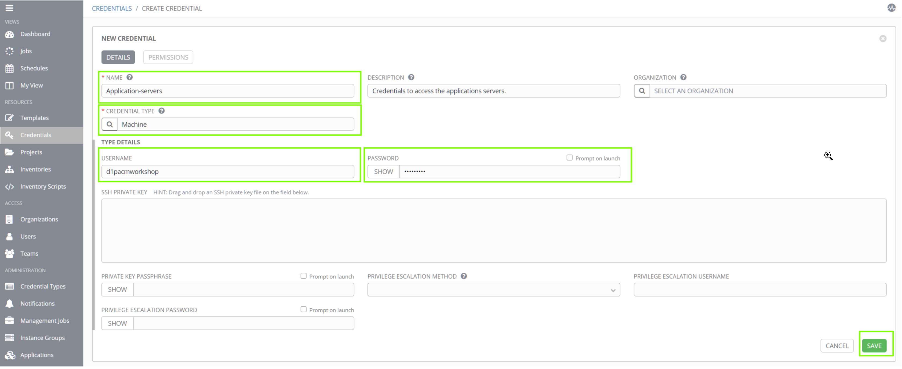
Setting up Templates
Add a template by navigating to Templates on the left-hand side and delete the existing template before proceeding to add a new Job Template:
Delete Templates
Configure the Template with the values as below:
Name: Process-unavailable
Inventory: Application-DT-inventory
Project: Application-playbooks
Playbook: process-restart.yaml
Also, please configure extra variables which will be used in your playbook as below:
tenanturl: your-tenant-url
dttoken: your-token
dtcommentapiurl: your-tenant-url/api/v1/problem/details/{{pid}}/comments?Api-Token={{dttoken}}
dtdeploymentapiurl: your-dynatrace-url/api/v1/events?Api-Token={{dttoken}}
my_ip: your-aws-instance-ip
Also, please select the Prompt on launch which would enable the dynatrace-payload to be available for the job when triggered.
A template would like below once configured fully.
Availability alert
Enable the availability alert for the NodeJS process. Within dynatrace-tenant, navigate to Technologies > NodeJS Process-Group > Settings > Availability monitoring and toggle the "Enable process group availability monitoring" as below:
Configure Alerting Profile
Let us further set the Alerting profile so that the problems can be notified to 3rd party like email, slack-integration, etc.
Within your tenant, navigate to "Settings > Alerting > Alerting profiles". Now, add a new alerting profile "Ansible-playbook" and set the rules as below for "Availability event".
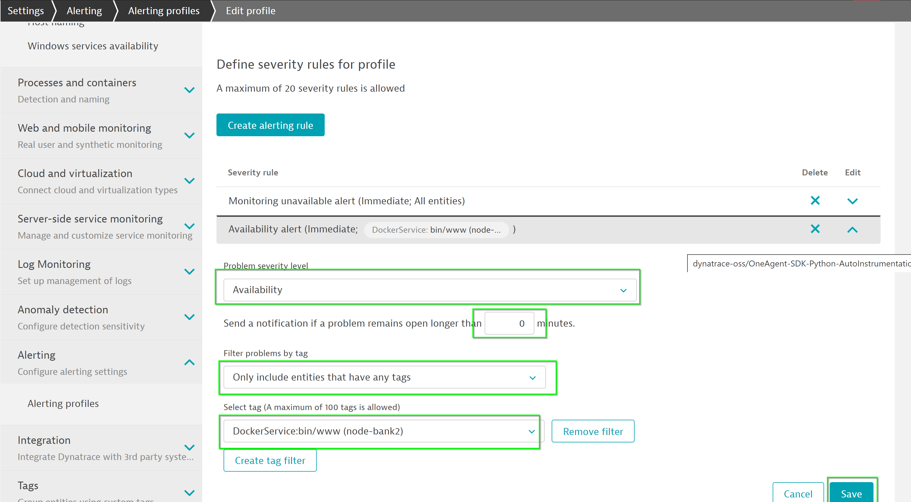
Problem notification
Once alerting profile is setup, let us setup the problem notification so that the problem information is relayed to ansible-tower. To do so, within your tenant navigate to Settings > Integration > Problem Notifications and click on Set up notifications
Select Ansible Tower as the 3rd party integration tool
Configure the notification as below:
Ansible Tower job template URL: URL of template added earlier
Username: admin
Password: dynatrace
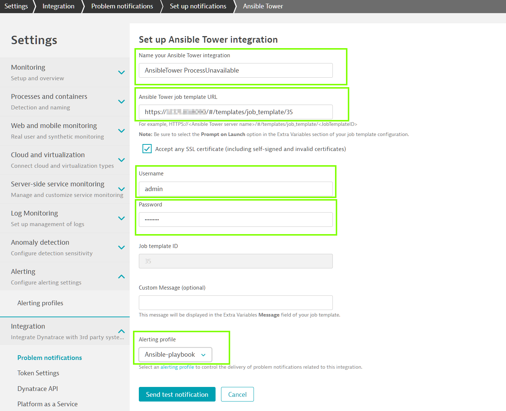
Now, within your browser go to http://my-IP:3000/login and log-in with incorrect credentials. This would crash the docker in the backend resulting in the service no longer available.
This triggers a problem in Dynatrace and according to the problem-notification configured earlier, it would send a notification to ansible job-template and trigger the playbook automatically.
Initial analysis
The remediation would perform initial analysis on the problem like the problem-type, severity, collecting logs and push these as comments on the problem.
Auto-remediation
Further, it would start the docker that has crashed due to incorrect logging and push a deployment event on the service:
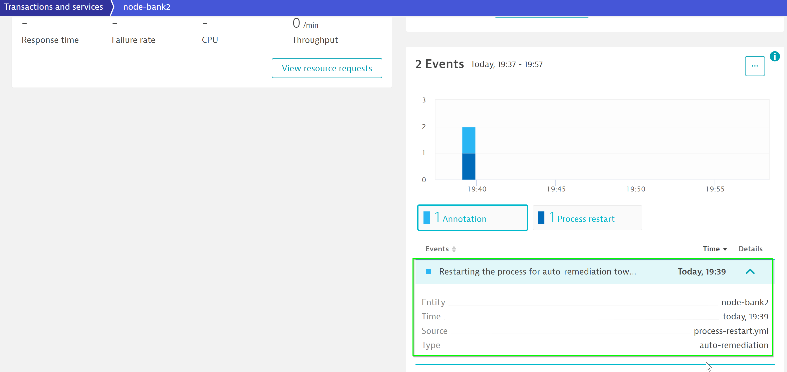
Validating the auto-remediation
Next, the playbook will create a synthetic monitor and run the user-actions on it to validate if the application is up entirely and there are no issues.
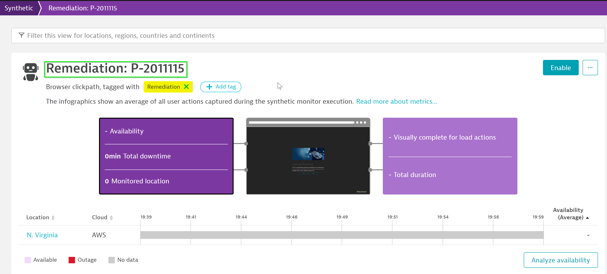
Complete auto-remediation
Once completed, it would push the information in DT indicating that the remediation has been completed succesfully.